梅吉、平たくなる [梅吉]
遊んでいるうちにへんなスイッチの入った梅吉さん。
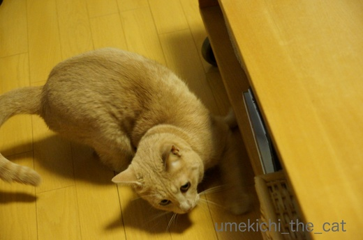
ローテーブルの下に入るんですか！？
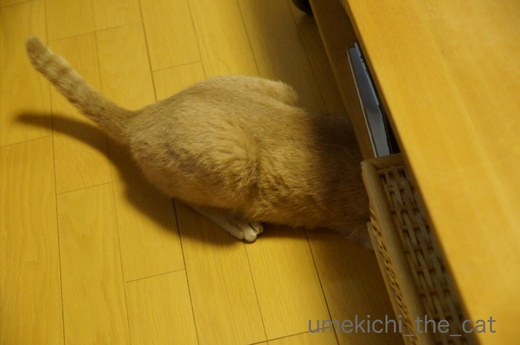
ちっさい頃はいけましたけど今は無理じゃないですか〜？
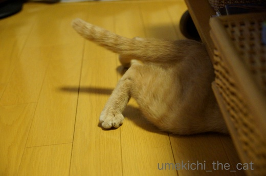
ぐいぐいぐいぐい
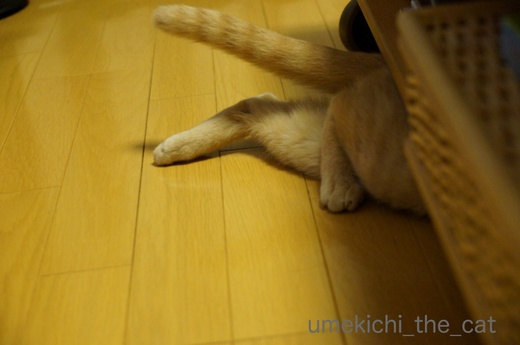
ぎゅい〜〜〜〜ん
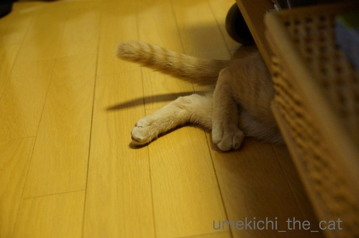
このあと入って見えなくなりました。

テーブルとフローリングの隙間9㎝。
のびーんと長くなったり、ちまっと短くなるな、とは思っていましたが
平たくなるとは・・・・
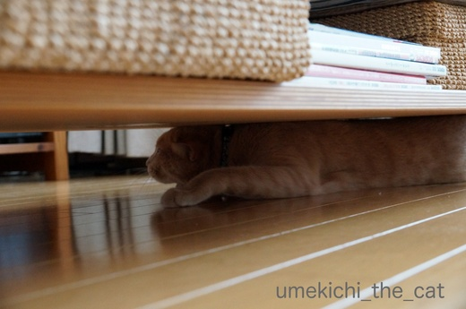
満足ですかー？楽しいですかー？

これは７ヶ月頃の写真。キッチンの食器棚の上の隙間。
幼くて今より更にスリムだったのでこんな狭いところにも入れました。
この場所、一年に一度しか掃除しないし（ふふふ）
ホコリだらけだろうから今入られたら困るよね、まさか入らないよね・・・
念のため測ってみたら

あわわわわわわわwwwww９㎝！掃除しなきゃ！！
 ↑ガブッと一押し↑
↑ガブッと一押し↑
![[猫]](https://blog.ss-blog.jp/_images_e/101.gif) けっこうひらたいんやでー。
けっこうひらたいんやでー。
標準語は「平たい」の様ですが北海道弁では「平ぺったい」。（私は札幌出身）
この方がべと〜んと潰れた雰囲気が出ていて好きなんですけど。
他の地方ではどんな言い方するのかな。
〜追記〜
出張中のおっとから「ぺったらこい」（へ＋○）があるよねとメール。
そうそう！ディープな北海道弁！
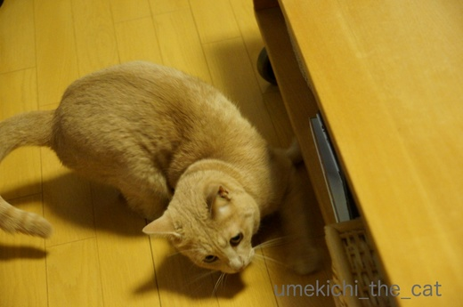
ローテーブルの下に入るんですか！？
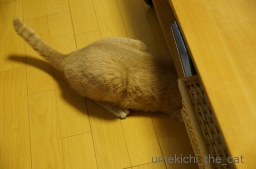
ちっさい頃はいけましたけど今は無理じゃないですか〜？
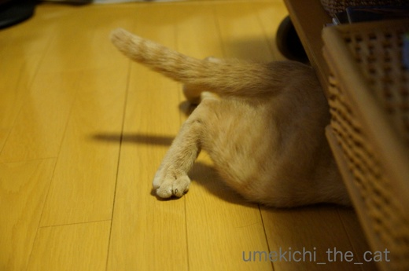
ぐいぐいぐいぐい
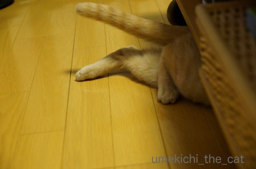
ぎゅい〜〜〜〜ん
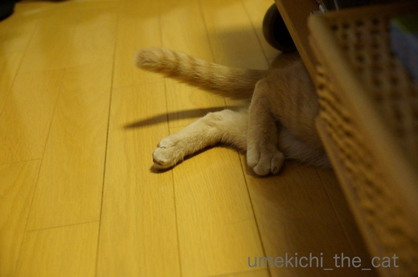
このあと入って見えなくなりました。

テーブルとフローリングの隙間9㎝。
のびーんと長くなったり、ちまっと短くなるな、とは思っていましたが
平たくなるとは・・・・
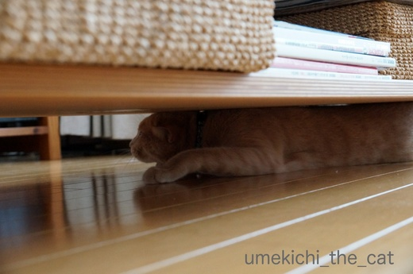
満足ですかー？楽しいですかー？

これは７ヶ月頃の写真。キッチンの食器棚の上の隙間。
幼くて今より更にスリムだったのでこんな狭いところにも入れました。
この場所、一年に一度しか掃除しないし（ふふふ）
ホコリだらけだろうから今入られたら困るよね、まさか入らないよね・・・
念のため測ってみたら

あわわわわわわわwwwww９㎝！掃除しなきゃ！！
標準語は「平たい」の様ですが北海道弁では「平ぺったい」。（私は札幌出身）
この方がべと〜んと潰れた雰囲気が出ていて好きなんですけど。
他の地方ではどんな言い方するのかな。
〜追記〜
出張中のおっとから「ぺったらこい」（へ＋○）があるよねとメール。
そうそう！ディープな北海道弁！

カフェオレ色の梅吉

梅吉 2023年8月10日 永眠


梅吉と出会った譲渡会

犬猫の理由なき殺処分ゼロ
妄想広告
UMEKICHI 光

爆発的に早い！
時々攻撃的！
Thanks to Mr.Boss365
爆発的に早い！
時々攻撃的！
Thanks to Mr.Boss365

梅吉さん♪ 平べったくなっておりますね♪
にゃんこさんは隙間に入りたくなるみたいですね！
冒険なのか？安心出来る場所なのか？
どちらにしてもなんだか楽しそうです(#^.^#)
by きぃ (2017-07-12 16:47)
スイッチ入っちゃったの～？
狭いところ・・・そうなの。埃だらけの場所だったりするから～。
でも、ちぃさんのお家きれい。
掃除も行き届いててインテリアも素敵！と思って見ていました(^-^)
まさかね。をするのが猫だと思うんだなｗ
梅吉くんダイエットで身軽になって、新たな隙間にも挑戦しちゃうかな？
家の方は(神奈川)平べったいって言ったりします。
ぺったい！可愛いかも～♪
by emi (2017-07-12 18:23)
あっはっは ひらべっちゃい（テオ 新潟県上越地方）
ぺちゃらっこい（テオット 新潟県下越地方）梅吉さんどんどんぺらっぺらになって行きそう
by テオ (2017-07-12 18:50)
東京でも平べったいですね。ぺの方が可愛いけど、それより老眼でべとぺの違いが見えません。
ちぃさんのお宅はどう見てもすんごくキレイです。うちで綿ぼこりを撒き散らしながら走り回る猫たちを見たら卒倒されるでしょう。
ぐいぐいぐいのお写真が好きっ!
by zombiekong (2017-07-12 18:53)
受けちゃいました(^_^)v
by kou (2017-07-12 19:28)
ひらべったい。今住んでる愛知県。
へらべったい。故郷の徳島県。多分。40年近く前なのでうら覚えです(^-^;
by riverwalk (2017-07-12 19:57)
梅吉さん、９cmの高さに入れるとはスゴイです(°_°)
うちのは腹肉がつかえてNGだなぁ(⌒-⌒; )
あっ、でも掃除場所が増えないからLUCKY♪( ´▽｀)→違っw
by ニッキー (2017-07-12 20:05)
大阪は平べったいですね！
梅吉さんもスキマスキー仲間ですね(*^▽^*)
こてつのおかげで、家具の裏やクローゼットの上など、下僕だけだったら年末の大掃除だけで済むところを、しょっちゅう掃除しなければならなくなりました。おかげで我が家はピカピカです^^;
by ゆきち (2017-07-12 21:17)
もしかして、梅吉くんは掃除をしてくれているのかもしれませんよ（笑）
長くなって、短くなって、平たくもなるのですね。
後はどんな風になるのでしょうか？楽しみです。
by kiki (2017-07-12 21:41)
梅吉さんは9cm（・・・の隙間）ファンなのかなあ。^^;
踏ん張る足が特にかわいい♪
by yes_hama (2017-07-12 21:53)
猫の体ってほんと自由自在ですよね。やわらかいんですね～しかし何か中にあったのかな？
by みぃにゃん (2017-07-12 22:20)
「ここは無理だろう！」って思う場所でも
入っていっちゃいますね。
隙間掃除はニャンコにお任せ＾＾；
by ぽちの輔 (2017-07-13 07:33)
ダブルクリックして拡大してみましたよ〜(^^;
｢ぺ｣なんですね。うちは｢べ｣です。
言葉を覚える時代！？は名古屋にいました。
うちの王子は太腿の筋肉がすごいので、
潜り込もうとしても途中で引っかかっちゃいそう…。
というより、怖くて先に進めないのかも(◜௰◝)
by も〜 (2017-07-13 07:39)
私がたまにお借りする某猫さんでは
このぺったらこいは無理そうです。(^^;)
by KENT0mg (2017-07-13 08:38)
梅吉君、狭いところに詰まってますね。
隙間に物が入ってっちゃった時とか取ってもらえそう。マジックハンド梅吉君。1人で遊んでもっと奥に入れてくれそう！
棚の上とか困りますよね。目線より上は掃除範囲外なので(キリッ
by BillK-ko (2017-07-13 15:22)
きぃさん＞ほとんどのにゃんこはゆきちさんがおっしゃるところの
「スキマスキー」ですよー＾＾
無理やり入ってゆく様子を見ていると
「そこにスキマがあるから！！」と挑んでいるとしか思えません(^▽^;)
emiさん＞突然妙な行動をしたり走り出したり・・・
へんなスイッチが入りがちな梅吉です。まだまだおこちゃま？
目につくスキマは日々掃除する様に心がけいるのですが
それ以外は・・・・・ホコリしか出てこないから入らんといて〜です (^▽^;)
神奈川はへ＋〃ですね＾＾情報ありがとうございま〜す。
テオさん＞地道に訓練を続けて行けばさらにぺらっぺらになりましょう。
下僕は9㎝以下も掃除しなければ・・・(-_-メ)
ひらべっちゃい、ぺちゃらっこい、どちらも郷土色あふれるお言葉！
いいですね〜。
平たい、だけでは表せない様々なニュアンスが感じられます＾＾
そうそう、北海道弁には「ぺったらこい」がありましたよ〜。
zombiekongさん＞写真に写りそうな範囲だけ掃除してるんですよ（ｺｯｿﾘ(⌒_⌒;
PC画面ならなんとかですがスマホの小さい画面では
○と〃の判別が難しくなってきつつあります・・・・・
電車の座席でスマホを近づけたり遠ざけたりする
お怪しいおばちゃんは私です(-_-メ)
kouさん＞梅吉、アホで可愛いやつなんですよ〜。
笑ってやってくださいませ。ウケてなんぼのなにわっこですねん(≧▽≦)
riverwalkさん＞徳島ではひ→へに変わるんですね！
大阪でヒレ肉のことをヘレ肉というのはそれと関係あるのかなぁ。
それともフィレ肉をそれぞれの地方で一番言い易い様置き換えただけ？
言葉って面白いですねww
ニッキーさん＞にゃんこは軟体動物ですから大御所様をはじめ
みなにゃんもやるときはやるかもしれませんよ〜＾＾
さしあたって我が家は掃除の時に定規を持ち歩いて
改めて掃除をしていないスキマの大きさチェックをせねばなりません(^▽^;)
ゆきちさん＞平べったい、関西でも通じるんですね＾＾
こてつくんに続くスキマスキー２号梅吉のお陰で
スキマにまで配慮の行き届くデキる下僕になれそうです(=_=;)
kikiさん＞今後梅吉がどんな「楽し面白ポーズ」を披露してくれるのか
私も楽しみで〜す。
常にカメラを傍らに！瞬間を逃さない様にしなければ・・・・・
掃除、まずは掃除機からお願いしたいんだけどなぁ。
yes_hamaさん＞今の所9㎝がチャレンジ精神をかき立てる
スキマなのでしょうか＾＾
さらに狭いところを目指すのはやめていただきたいものです(⌒_⌒;
みぃにゃんさん＞中には・・・・・何もありませんでした〜。
そこにスキマがあるから！とチャレンジしたものと思われますヾ(*ΦωΦ)ﾉ
ぽちの輔さん＞これ以上「無理！」と思われる場所には入っていただきたく
ありません〜(꒦ິ⌑꒦ີ)
スキマ掃除と狭い場所の配線は
是非お願いしたいところなんですけどね(^▽^;)
も〜さん＞私もスマホの小さい画面では「○と〃」の
判別が難しくなってきました(^▽^;)
夕方以降だとPCでもキビシイ時が・・・・・はぁ〜(꒦ິ⌑꒦ີ)
皆さんのコメントによると「へ＋〃」が主流の様ですね。
一部「へ＋○」に変わってゆくのは関東より北のライン
と睨んでおります。
王子、太ももムキムキ？触って見た〜いＯ(≧▽≦)Ｏ
KENT0mgさん＞ふふふ、下僕の方から申告がありましたわww
by ちぃ (2017-07-13 15:22)
BillK-koさん＞いいですね！マジックハンド梅吉。
出さないで欲しい物まで引っ張り出してくれそうです(^▽^;)
取りにくい所に入った物を更に奥へ奥へ！はあるあるです。
引越しでもしない限り無理なところへ行ってしまったのに
「おかーさんはなんであれがとれんのや？」と
非難がましい目で見られるのは下僕として辛いところです(꒦ິ⌑꒦ີ)
目線より上は掃除範囲外！私小柄なので掃除範囲外がいっぱい！！
背中を押してもらえてうれしいわぁ(*>艸<)
by ちぃ (2017-07-13 15:30)
アハハ！すごーい！ものすごく険しくて狭い洞窟の探検家みたい！
(≧∇≦)ｷｬｰ♪
by Ginger (2017-07-13 16:45)
Gingerさん＞我が家に梅吉未踏の地は在りませぬ！
・・・・・・掃除しなくっちゃ！！
by ちぃ (2017-07-13 18:06)